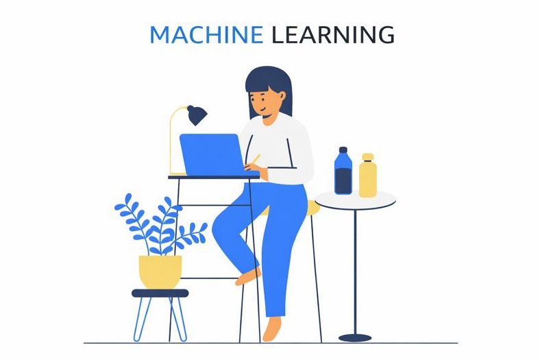
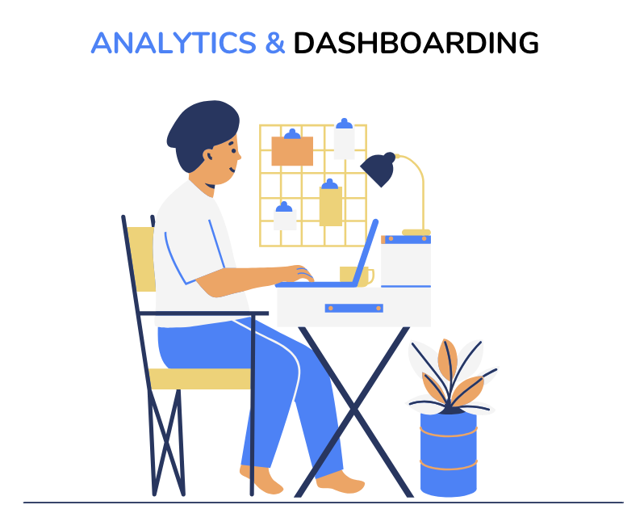
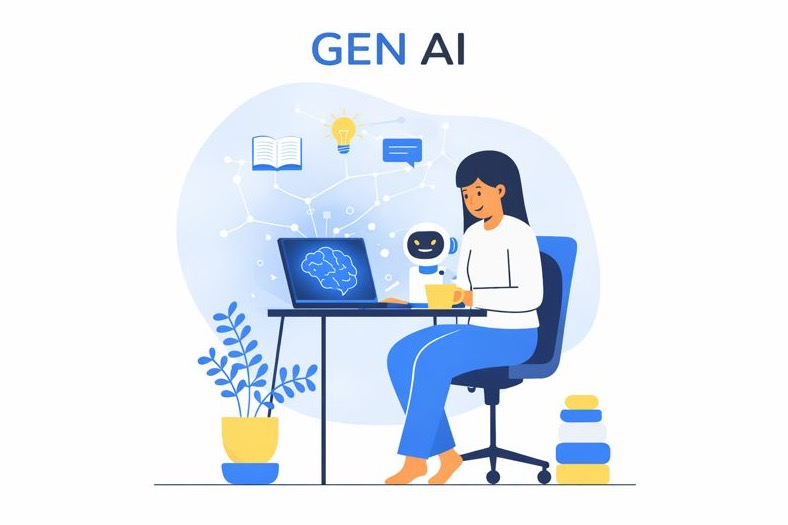
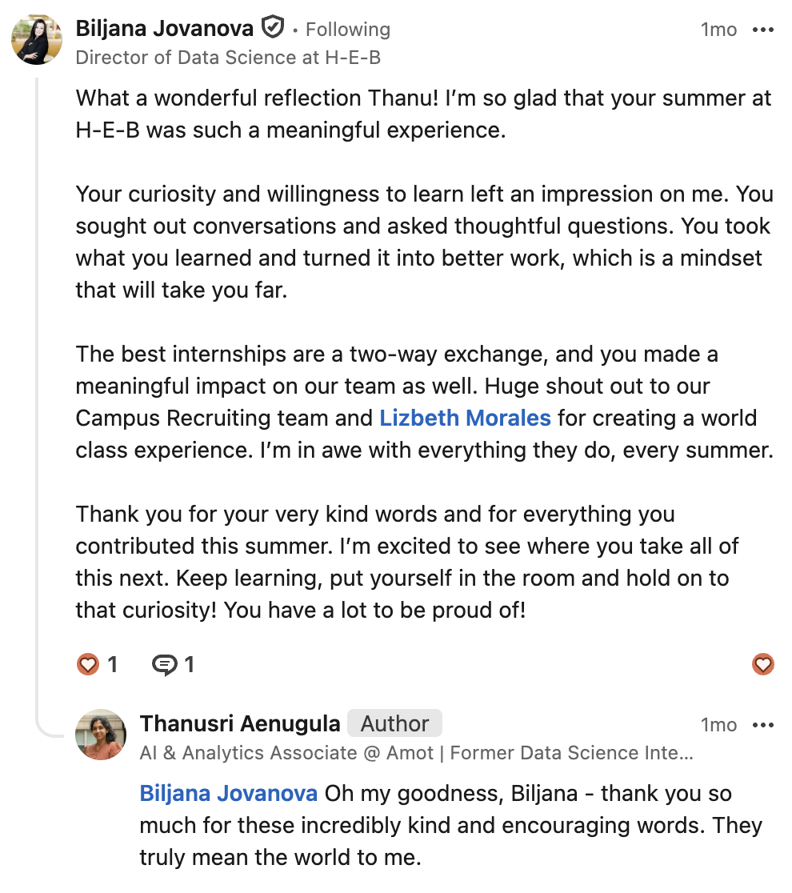
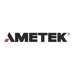
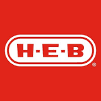
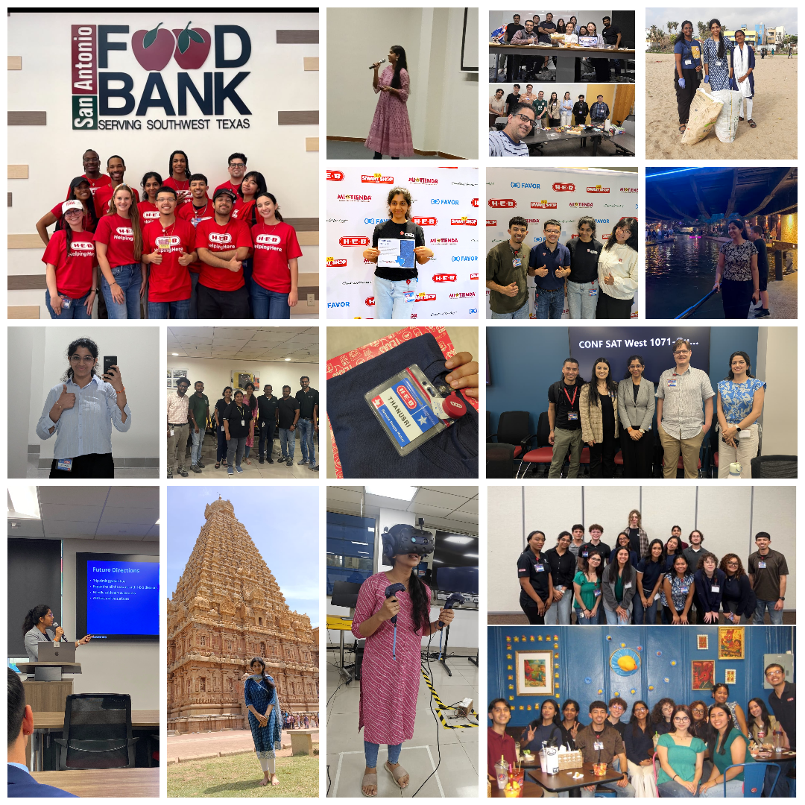

Who Am I?
Hi, I’m Thanusri Aenugula a Data Science graduate student at Texas A&M with a background in Electrical Engineering and a curiosity for how data and AI can solve real-world problems.
From recommendation systems and predictive analytics to AI-driven solutions, I enjoy taking a problem apart, asking better questions, and building something useful from it.
I’m still on the learning curve - and that’s the part I enjoy most.
HOW DO I TURN IDEAS INTO RESULTS?


WHAT I DO?
Generative AI & Data Science Skillset
- Large Language Models
- Agentic AI Systems
- Prompt Engineering
- Retrieval-Augmented Generation
- Fine-tuning & Model Optimization
- LLM Evals
- Machine Learning
- Deep Learning
- NLP
- Data Preprocessing & Feature Engineering
- Statistical Analysis
- Experimentation & Evaluation Metrics
- Model Deployment
Data Analytics and Dashboarding
- SQL
- Tableau
- Power BI
- Microsoft Excel
- Data Visualization
- A/B Testing
- Hypothesis Testing
- SPSS
- Data Manipulation
- Python Data Visualization Libraries : NumPy, Pandas, Matplotlib, SeaBorn
Interpersonal Skills
- Effective Communication
- Stakeholder Management
- Collaboration
- Problem-solving
- Design Thinking
- Resilience
- Time and Task Management
- Presentation Skills
What’s it like to work with me?

I had the pleasure of being Thanusri’s mentor for her 2026 Data Science internship at H-E-B. During her internship, Thanusri took ownership of her project in a manner exceeding that of most of her peers. In the initial weeks she engrossed herself in H-E-B’s culture and participated in deep research to understand the domain she was supporting. Once she established herself in the project background, she took the reins to be the development lead. One thing that impressed me was Thanusri’s ability to absorb information and feedback and incorporate that into her project while still maintaining a strict adherence to the deadlines. Beyond her technical adeptness, Thanusri invested time to meet with Partners across H-E-B (covering a vast array of domains) to establish personal connections and learn how her project fits into the larger picture. As a result of interest around her project, she was invited to an all-hands meeting by a sister team to present her work. Her final presentation to the entire H-E-B internship cohort (and their peers) was among the most comprehensive, clear, and exciting. Thanusri excels in the technical and soft skills that would make her a valuable asset to any team.
I had the opportunity to work with Thanusri in the same group at the Advanced Vision & Learning Lab at Texas A&M University. During that time, I found her to be punctual, hardworking, and respectful in the group environment. She showed a positive attitude toward her work and was willing to contribute to assigned tasks. Thanusri is also a kind and professional person to work with, and I believe these qualities will support her in future academic and professional opportunities.
Thanusri, Highly Aspiring, Commitment Oriented, Keep Improving Attitude & Kindful. Displayed her patience and persistence in preparing the base table by constantly working with test engineers. Her efforts to understand more and improving the sanity level constantly is much appreciated. Although coming from non automotive background, she rapidly learnt the basics and correlated in the ML model. When questions arose, she didn’t just accept the status quo—she asked probing, thoughtful questions, seeking clarity from first principles. Inquiry to the core. Very sincere in completing the model well ahead of timeline. Throughout review cycles, she responded to feedback promptly and diligently, demonstrating a strong sense of ownership and commitment to quality. Her communication skills are excellent, explaining complex concepts in simple understandable manner. She is kind, grounded and approachable. Privilege working with Thanusri. I am confident she will continue to excel.
Thanusri is an ardent learner, with a great attitude and wide perspective. During her internship at Daimler Truck, she not only exhibited her proficiency in her core domain, but also cross learnt vehicle systems and connected the dots efficiently. It was pleasure to work with her!
How have I made an impact?
-

AMETEK - Amot Controls
AI & Analytics Associate
Aug 2026 - Present- Designed a RAG feature on Microsoft Copilot Studio within 4 weeks using product manuals, datasheets, and internal emails, enabling customer service representatives to quickly access support information, improving response consistency and reducing manual search effort.
- Built an evaluation and observability layer combining LLM-as-a-Judge scoring, a golden dataset of 500+ QA pairs, human-in-the loop review, and LangSmith tracing across runs, achieving ~85% answer accuracy on queries and reducing debugging time.
- Built an end-to-end intelligent document processing (IDP) and workflow automation pipeline in Power Automate, using Azure AI Content Understanding and Azure AI Document Intelligence to extract structured order data from customer purchase orders with varying layouts.
- Integrated the pipeline with the IFS Cloud ERP REST API, adding validation checks on extracted order fields before automatically creating order confirmations, reducing manual data entry for the order processing team.
-

H-E-B
Decision Science Analyst Intern
May 2026 - Aug 2026- Designed a Next-Basket Recommendation system using 11M+ grocery transactions across 15K+ products to predict which items each household will buy on their next shopping trip, improving on frequency-based recommendations by adding purchase timing.
- Built an end-to-end recommendation pipeline that filtered each household’s purchase history to relevant products and engineered 55 temporal, behavioral, and basket-level features, such as days since last purchase, typical repurchase cycle, and overdue items.
- Trained a LightGBM LambdaRank learning-to-rank model, tuned with Optuna hyperparameter optimization, to prioritize easily forgotten items, achieving 74% Recall@10 by capturing three-quarters of items customers actually purchased within the top 10 recommendations.
- Presented the recommendation framework and key findings to Data Science leadership, demonstrating a scalable methodology to improve basket completeness, customer loyalty, and shopping experience.
-
Texas A&M University, Advanced Vision and Learning Lab
Graduate Student Technician
Jan 2026 - May 2026- Contributed to research at Texas A&M University’s Advanced Vision and Learning Lab (AVLL), working under Dr. Joshua Peeples on an automated plant phenotyping project to develop image-processing workflows that quantify plant growth and morphology from segmented images.
- Supported researchers in computer vision based plant growth analysis, transforming segmented plant images into quantitative growth measurements using OpenCV, image processing, and skeletonization to analyze complex plant structures.
- Extracted 5+ plant traits, including leaf area, width, path length, and structural measurements, and collaborated with AgriLife researchers to turn growth and morphology analyses into insights for experimental planning and research decisions.
-

Daimler India Commercial Vehicles (BharatBenz)
Data Science Intern
Jan 2025 - Jun 2025- Collaborated with the Data-Driven Engineering team to develop machine learning solutions into vehicle testing pipelines, streamlining 6 dynamic brake testing workflows across 44 truck variants.
- Developed a statistical twin for Dynamic Brake Testing, predicting braking deceleration (MFDD) with Random Forest Regressor (R² 0.94) and stopping distance with XGBoost Regressor (R² 0.937), tuned using GridSearchCV.
- Built and delivered a Streamlit application for the Functional Brake Testing team that predicts whether a vehicle will pass or fail regulatory brake tests, enabling pre-screening before physical testing and reducing testing time by 80%.
- Built ETL pipelines in Azure Databricks using PySpark and SQL to extract telematics and Dealer Management System data from Azure cloud storage, transform it for analysis, and built Power BI dashboards for vehicle monitoring, driving pattern analysis, and fleet optimization.
-

Shrimitha Energy Solutions Pvt Limited
Data Science Intern
Sept 2024 - Nov 2024- Formulated hybrid deep learning models CNN-LSTM-XGBoost to predict lithium-ion battery Remaining Useful Life and State of Charge, achieving an R² of 0.97 and enabling high-accuracy predictive maintenance.
- Processed degradation feature-extraction for performance data from 38+ lithium-ion batteries, supporting early fault detection and reducing fault-identification time for maintenance scheduling.
- Established end-to-end battery health monitoring pipelines integrating predictive RUL models with operational systems, reducing unplanned equipment downtime and improving maintenance planning accuracy.
- Produced interactive Power BI dashboards visualizing real-time battery degradation trends, capacity fade curves, and health KPIs, enabling data-driven maintenance decisions for field operations.
-
Defense Research Development Organisation
Data Science Intern
Jul 2023 - Aug 2023- Conducted in-depth literature survey and technical analysis on Hybrid Electric Vehicle Technologies to identify innovation trends and performance metrics.
- Applied data collection, preprocessing, and analytical techniques to synthesize insights from diverse engineering and research sources.
- Collaborated with a multidisciplinary team under Defence Research & Development Organisation (DRDO) to align research outcomes with industry and government objectives.
- Presented the literature survey to Scientist 'F' - Selvathaai at the Combat Vehicles Research and Development Establishment (CVRDE) on the Hybrid Electric Vehicle Technologies.
where am i building my foundation?
Master of Science in Data Science (Aug 2025 - May 2027)
I am currently pursuing a Master of Science in Data Science (MSDS) at Texas A&M University, College Station, Texas, USA. My graduate studies have strengthened my foundation in machine learning, artificial intelligence, statistical modeling, and large-scale data analytics while providing opportunities to apply these concepts to real-world business problems.
Courses: Mathematical Foundations for Data Science, Statistical Foundations for Data Science, Data Mining and Analysis, Databases and Computational Tools Used in Big Data, Applied Analytics, Parallel Computing, Machine Learning Engineering
- GPA : 3.85/4
- I worked as a Graduate Student Technician in the Advanced Vision and Learning Lab, contributing to a research project on Multimodal, Multitask Data Analysis for Automated Plant Phenotyping
- I worked as a Decision Science Analyst at H-E-B this summer within the Data Science Center of Excellence (DSCOE) on an end-to-end Next-Basket Recommendation System to predict customer's next purchases.
- I am currently working as a AI & Analytics Associate at AMETEK - Amot Controls for this fall where I am working on AI-driven workflow automation and data analytics initiatives, collaborating with teams to build data and AI solutions.
Bachelors in Electrical and Electronics Engineering (Aug 2021 - May 2025)
I have completed my Bachelor of Engineering in Electrical and Electronics Engineering from Sri Sivasubramaniya Nadar College Engineering, Chennai, India. During my undergrad, I participated in cultural fests, hackathons, and clubs to explore my interests. I also worked on multiple projects and undertook internships to widen my technical skillset. Undergrad was a challenging yet exciting phase of my life and taught me to be independent and self-sufficient!
Courses: Data Structures, Probability and Statistics, Introduction to Data Science, Machine Learning, Artificial Intelligence
- GPA : 8.72/10
- Actively contributed to the DATABUZZ community by engaging in advanced workshops and collaborations, expanding expertise in data analytics and project management.
- Coordinated alumni engagement for a 600+ attendee tribute event, strengthening the SSN network and elevating event execution standards through strategic planning and relationship-building.
- I volunteered and managed technical events at INVENTE a technical fest of SSN.
- I was a part of the Build Club of India, SSN. Engineered innovative turns ideas into real-world prototypes through hands-on hardware and IoT projects.
- I Secured first position in the regional-level singing competition and represented at the national-level.
Post Graduate Program in Data Science & Business Analytics – Professional Certification (Aug 2023 - Aug 2024)
I have completed the PG Program in Data Science and Business Analytics from the University of Texas at Austin. The program focused on advanced data analytics, business strategy, and hands-on projects using industry datasets.
Courses: SQL, Predictive Modeling, Data Visualization, Time Series Forecasting, Marketing and Retail Analytics, Financial and Risk Analytics.
Achievements & Certifications
What Keeps Me Energized?

Let’s start a conversation!!
thanusri1601@gmail.com
College Station, TX